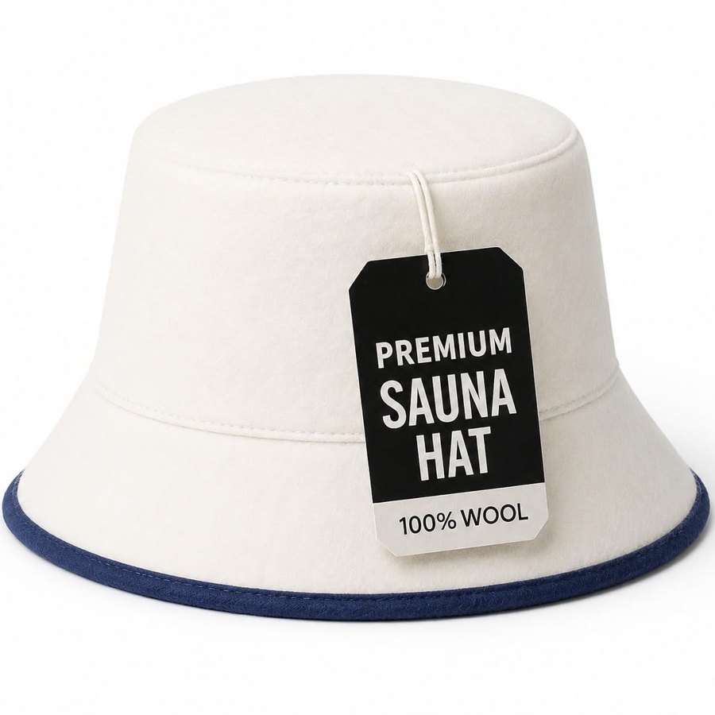

The Sauna Hat Guide
Why heat rises and what to wear on your head
Why heat rises and what to wear on your head
A free guide by DIVELUX, makers of wool sauna hats · diveluxsaunahat.com
Your head
190 °F88 °C · top bench, seatedWarm air is lighter than cool air. It floats up and collects under the ceiling, so the room is hottest at the top and mildest at the floor.
Illustrative example of a hot Finnish-style sauna, not a measurement. Real rooms vary.
On the top bench your feet rest in mild air while your head is close to the hottest layer in the room.
Water on the stones sends hot, humid air up to the ceiling and down over your head and shoulders.
Move down a bench, or cover your head. A hat lets you keep your seat.
It works like an oven mitt for your head. Wool felt is full of tiny air pockets, and still air is a poor conductor of heat.
Wear the hat dry.
Dry felt holds the air that does the insulating. Put the hat on before you walk into the hot room, and hang it up to air out afterward.
| Material | In the heat | With sweat and steam |
|---|---|---|
| Wool felt | Thick, full of trapped air. Insulates well. | Takes up moisture vapor and still feels dry to the touch. |
| Linen | Thin. Covers hair, insulates much less. | Dries fast. |
| Cotton or terry | Moderate protection. | Holds sweat, gets heavy, loses insulation. |
| Synthetic felt | Insulates, but does not breathe like wool. | Can feel clammy. Check the label. |
The classic. Tall crown, sides that come down over the ears.
Flat crown and a short brim that shades ears, eyes, and neck.
The gap is one more layer of air. Too big? Fold the edge up.

Room temperature, about 20–24 °C (68–75 °F). Never warm or hot.
A little mild soap. Press the felt gently; do not scrub hard.
Press the water out between your palms or in a towel.
Shape it by hand and hang it by the loop or set it over a jar.
| Type | Air, °C | Air, °F | Humidity |
|---|---|---|---|
| Finnish sauna | 70–100 | 158–212 | low (10–20%) |
| Russian banya | 60–90 | 140–194 | medium (40–70%) |
| German Aufguss sauna | 80–100 | 176–212 | low |
| Bio sauna (soft sauna) | 45–60 | 113–140 | medium (40–55%) |
| Infrared sauna | 45–60 | 113–140 | low |
| Steam room | 40–50 | 104–122 | high (95–100%) |
| Turkish hammam | 40–50 | 104–122 | high |
| Japanese sauna | 80–100 | 176–212 | low |
Compiled reference ranges from general published descriptions, not measurements. Source: Sauna Traditions of the World, v1.0 (DIVELUX, 2026).
General information, not medical advice. If you are pregnant, have a health condition, or take medication, talk to your doctor before using a sauna.
A small family brand in Irvine, California. We make sauna hats of 100% natural wool felt, felted and stitched by hand and shipped from the United States.
Visit diveluxsaunahat.comFull guide, open dataset, and more free sauna tools:
diveluxsaunahat.com/pages/sauna-tools
Text and diagrams © 2026 DIVELUX, CC BY 4.0. Not medical advice.
